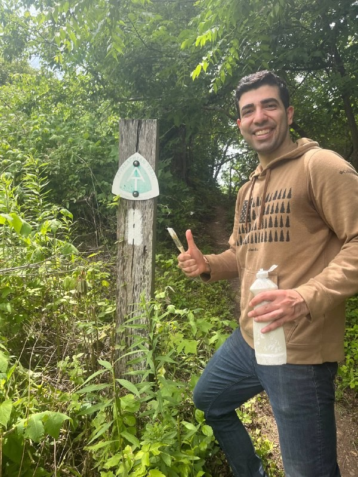
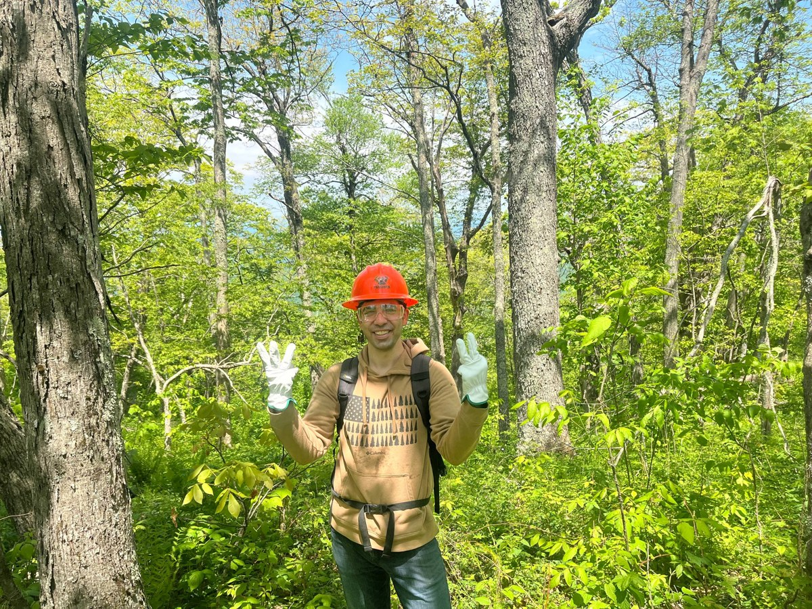

Beyond the work
Volunteer
- Blacksburg Habitat for Humanity. Volunteer construction on homes for local families, deck building, and loading and unloading materials for the build site.
- Blacksburg Outdoor Club at Virginia Tech. Trail construction and maintenance.

Honours
- Society Edward A. Bouchet Graduate Honor Society. Inducted member. The society recognises scholarship alongside service and advocacy in graduate education.
- 2024 Graduate School Scholar Award · Virginia Tech
- 2024 Graduate School Strategic Planning Committee · member
- 2023 Carl and Jane Belt Graduate Fellowship · Virginia Tech
- 2023 Allan Myers Student Competition · winner, site layout planning
- Cert. Future Professoriate Graduate Certificate · Virginia Tech

Peer review
46 reviews for seven journals, most of them in construction automation and building engineering: Automation in Construction, Engineering, Construction and Architectural Management, Journal of Building Engineering, Engineering Applications of Artificial Intelligence, Journal of Asian Architecture and Building Engineering, Data in Brief, and Civil Engineering.
Talent in construction
A steady thread through my work asks what it takes to attract and keep good people in construction. I've helped run Hokie for a Day, an outreach expo that brings K–12 students to campus, and built a small data project scraping MLSOC alumni career histories to see what paths led where and what "success" after the program actually looks like. On the research side: a systematic review of inclusion practice in the AEC industry in the Journal of Management in Engineering, a system dynamics study of workforce inclusion and organisational performance in the Journal of Construction Engineering and Management, an industry-centric study of educational practice, and an industry white paper. The outreach, the data project, and the papers are the same question, asked three ways: what makes a place worth joining and worth staying at.